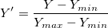
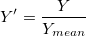
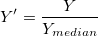

cnormalize
メニュー情報
解析：数学：曲線の正規化(グラフがアクティブな時)
概要
曲線あるいはXYデータを1つずつ正規化します。
追加の情報
必要なOriginのバージョン:8.1SR0
コマンドラインでの使用法
- cnormalize iy:=[graph1]2!2 method:=median;
- cnormalize iy:=(2,3) method:=ref ref:=1 to:=mean;
変数
表示
名
|
変数
名
|
I/O
と
データ型
|
デフォルト
値
|
説明
|
| 入力
|
iy
|
入力
XYRange
|
<active>
|
入力曲線かXY範囲を指定します。
|
| データ情報
|
datainfo
|
入力
TreeNode
|
<unassigned>
|
これはダイアログにデータ情報を表示するためのものです。LabTalkでXファンクションを使うとき、この変数は使用しないで下さい。
|
| 正規化の方法
|
method
|
入力
int
|
1
|
入力データを正規化するのに使用する方法を指定します。
オプションリスト
- specify:特定値で割る{0}
- val変数で指定した値で曲線を割ります。
- range:[0, 1]に正規化{1}
- 範囲 [0, 1]に曲線を正規化
- range:[0, 100]に正規化{13}
- データを範囲 [0, 100]に正規化(9.0SR0)
- snd: Zスコア(N(0, 1)で正規化) {2}
- 曲線を標準正規分布に変換
- max:最大値で割る {3}
- 曲線を最大Y値で除算
- min:最小値で割る{4}
- 曲線を最小Y値で除算
- mean:平均で割る{5}
- 曲線をY値の平均で除算
- median:中央値で割る{6}
- 曲線をY値の中央値で除算
- sd:標準偏差で割る{7}
- 曲線をY値の標準偏差で除算
- norm:ノルムで割る{8}
- 曲線をY値のノルムで除算
- mode:最頻値で割る{9}
- 曲線をY値の最頻値(モード)で除算
- sum:合計で割る{10}
- 曲線をY値の合計で除算
- ref:参照プロットを使う {11}
- ref 変数で指定した参照曲線を使って曲線を正規化します。
- pt:グラフで指定したポイントで正規化{12}
- グラフで指定した参照ポイントを使って曲線を正規化します。参照ポイントを指定するには、グラフ上の特定のデータポイントをダブルクリックするか、pickx, picky で参照ポイントのXY値を割り当てます。
|
| ユーザ定義の値
|
val
|
入力
double
|
1.0
|
この変数は、方法が特定値で割るにセットされている場合のみ利用できます。入力曲線を割るのに使用する値を指定します。
|
| 参照プロット
|
ref
|
入力
XYRange
|
<optional>
|
この変数は、方法が参照プロットを使うにセットされている場合のみ利用できます。これは参照プロット(XY範囲)を指定するためです。
|
| 正規化ターゲット
|
to
|
入力
int
|
0
|
この変数は、方法が参照プロットを使うにセットされている場合のみ利用できます。参照列のどの統計量を正規化の値にするかを決定します。正規化したら、入力列の選択された統計量が参照プロットの統計量と合致します。
オプションリスト
- min:最小
- 各曲線の最小値が参照プロットの最小値と同じになるように入力曲線を正規化します。
- max:最大
- 各曲線の最大値が参照プロットの最大値と同じになるように入力曲線を正規化します。
- mean:平均
- 各曲線の平均値が参照プロットの平均値と同じになるように入力曲線を正規化します。
- median:中央値
- 各曲線の中央値が参照プロットの中央値と同じになるように入力曲線を正規化します。
- sum:合計
- 各曲線の合計が参照プロットの合計と同じになるように入力曲線を正規化します。
|
| ピック操作
|
pick
|
入力
int
|
0
|
これは、ポイントを選択ボタンです。ダイアログで参照プロットを選択するのに使用します。これは正規化の方法でptがセットされている時のみ使用できます。LabTalkでXファンクションを使うときに、マウスを使ってグラフからデータポイントを選択するか、スクリイプトウィンドウでpickx, picky, pickidx を指定します。
マウスを使ってデータポイントを選択するには、方法をptにセットして、pickx, picky, pickidx を指定せずに、Enterキーを押します。マウスカーソルがになります。グラフから1つのデータポイントを選択し、これをダブルクリックして正規化を実行します。
スクリプトを使って、データポイントを選択するには、下記のpickx, picky, pickidxの説明をご覧下さい。
|
| ピックしたポイントのX値
|
pickx
|
入力
double
|
<unassigned>
|
この変数は、方法がptにセットされている場合のみ利用できます。これは参照ポイントのX値を指定します。
|
| ピックしたポイントのY値
|
picky
|
入力
double
|
<unassigned>
|
この変数は、方法がptにセットされている場合のみ利用できます。これは参照ポイントのY値を指定します。
|
| ピックしたポイントのインデックス
|
pickidx
|
入力
int
|
|
この変数は、方法がptにセットされている場合のみ利用できます。これは参照ポイントのインデックス値を指定します。
|
| 参照ポイント
|
refpoint
|
入力
Range
|
|
参照ポイントを指定します。
|
| 出力
|
oy
|
出力
XYRange
|
(<入力>, <新規>)
|
正規化した曲線の出力を指定します。
|
説明
この関数は曲線または曲線の一部を1つずつ指定した標準レベルに調整します。各選択した曲線を独立に扱い、すべての曲線を1つずつ正規化します。
サンプル
次のサンプルは、2つの曲線をグラフから選択したデータポイントに正規化する方法を示します。
- Samples\Curve Fitting\Exponential Decay.datをインポートします。
- 列Bから列Dを選択し、メニューから作図：線+シンボル：線+シンボルを選択してグラフを作図します。
- グラフをアクティブにします。メニューから、解析：数学：曲線の正規化を選択し、cnormalizeダイアログを開きます。
- 入力に"Decay 2"と"Decay 3"を選択します。入力曲線の情報が、全データの情報ブランチに現れます。
- 正規化の方法ドロップダウンリストからグラフで指定したポイントで正規化を選択します。ピックの隣にあるポイントをピックしてくださいボタンをクリックします。そして、ダイアログを最小化します。参照ポイントとしてグラフからデータポイントを選択できます。目的のポイントをダブルクリックして、ダイアログボックスに戻ります。これで、選択したポイントのX, Y値とインデックスがピックの下に表示されます。
- 出力の隣にある右向き矢印ボタンをクリックします。<入力>: XY = 入力 XY を選択します。
- OKボタンをクリックして実行します。正規化した曲線が元の曲線に置き換わります。3つすべての曲線が選択した参照ポイントを通ります。
-
アルゴリズム
 は入力曲線の
は入力曲線の  値、
値、 はユーザ定義の値、 および は、選択したデータポイントのx とy の値、は、x値が に等しいときの入力曲線のy値とします。正規化した曲線 は、以下の通りです。
はユーザ定義の値、 および は、選択したデータポイントのx とy の値、は、x値が に等しいときの入力曲線のy値とします。正規化した曲線 は、以下の通りです。
特定値で割る

[0, 1]に正規化

[0, 100]に正規化
Zスコア(N(0, 1)で正規化)

最大値で割る
最小値で割る

平均で割る

中央値で割る

標準偏差で割る

ノルムで割る

はn番目の 値です。
最頻値で除算
合計で割る
参照プロットの最大に正規化
最小値、平均値、中央値、参照プロットの合計への正規化は、同じ方法で行われます。
グラフで指定したポイントで正規化
|
Note:方法でptが選択されていると、グラフ内のどのデータでも参照ポイントとして選択できます。選択したデータポイントのX値が、入力曲線のX値の1つでない場合、線形補間 を行って適切な除数を取得します。そして、上記の数式に従って、曲線を参照ポイントに正規化します。
|
関連のXファンクション
Vnormalize, normalize, Rnormalize